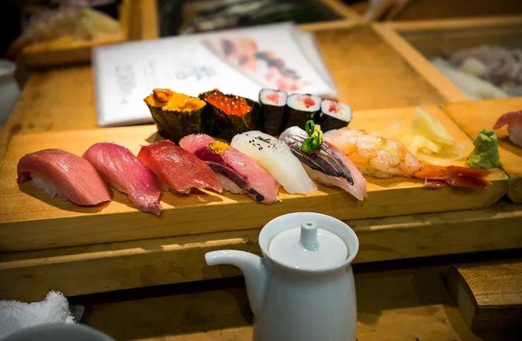
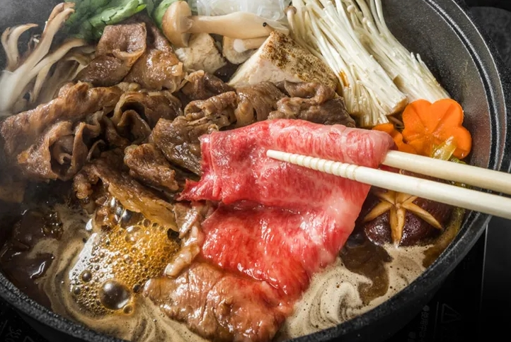
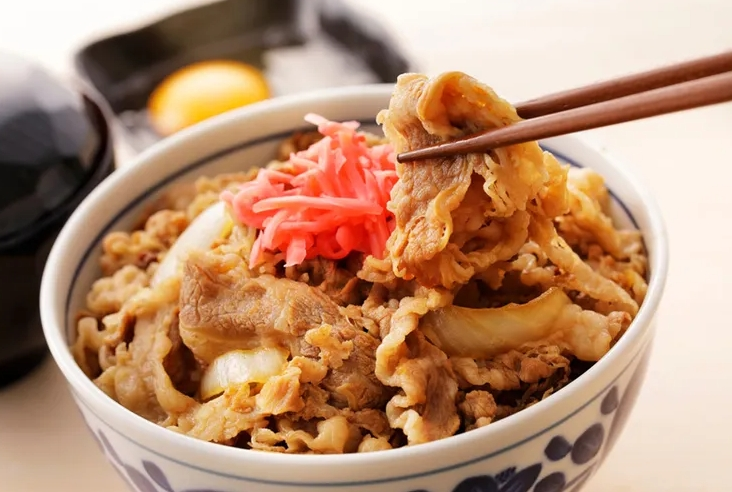
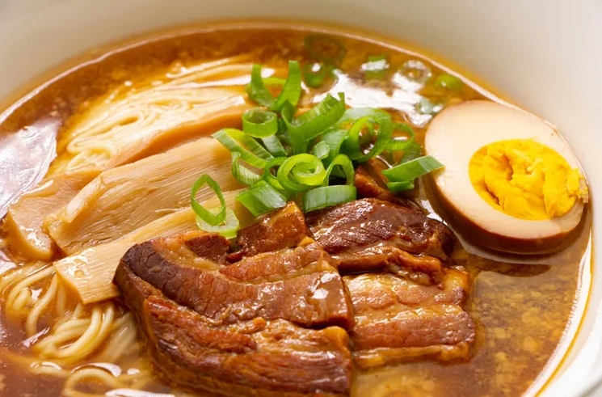
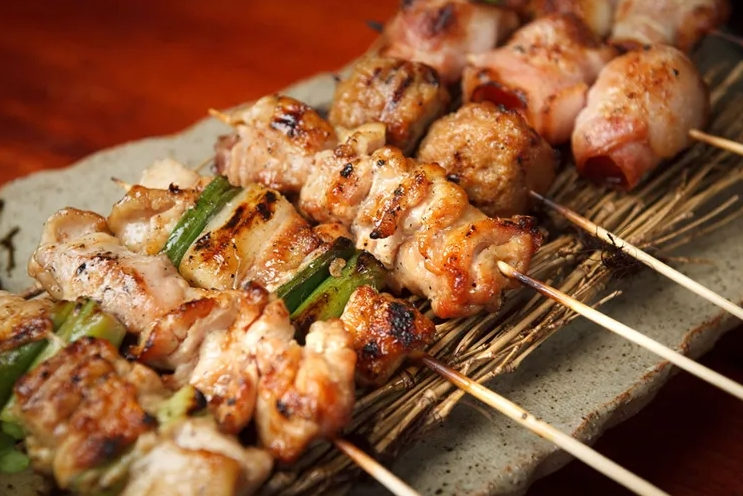

🥣 일본 음식 🍣
- 스시

- 일본의 밥 요리이며, 쌀밥에 날생선 등의 해산물이나 달걀 등을 조합한 음식
- 스키야키

- 얇게 저민 고기나 채소등을 얕은 냄비에 굽거나 삶은 요리
- 규동

- 쇠고기에 양파와 함께 달게 끓인 재료를 그릇에 담은 밥위에 올려먹는 일본식 덮밥
- 라멘

- 일본식 시나 국수 요리로 일반적인 맛은 쇼유,미소이며 차슈와 말린해초, 대나무순, 쪽파등 토핑을 얹는다
- 야키토리

- 일본의 닭고기를 꼬치에 꿰어서 만든 음식으로, 조리 후 고기는 타레나 소금으로 양념한다